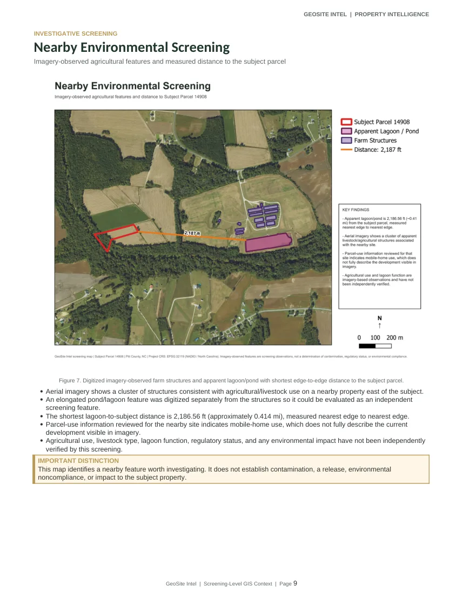

Portfolio / Property Intelligence
0 Mills Road.
Thirteen pages of evidence.
Independent property screening for a Pitt County, North Carolina parcel. The report uses available source records and location-based analysis to identify conditions requiring verification before land decisions.
Report components
Environmental context, access, and surroundings.
Selected pages from the actual source report are shown below. Open the PDF to review the full methodology, sources, and cautions.



What was evaluated
Parcel data, NAIP imagery context, FEMA flood zones, NWI wetlands, soils, modeled drainage, access, terrain, and surrounding land use.
What the review did not establish
Legal buildability, contamination, engineering flow direction, field-confirmed conditions, jurisdictional wetlands, or regulatory compliance.